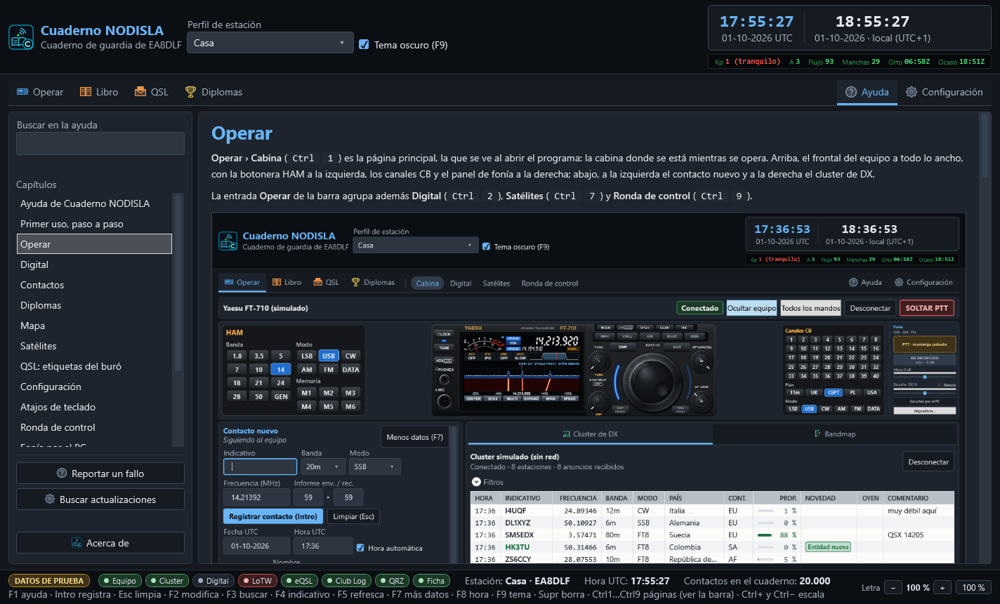
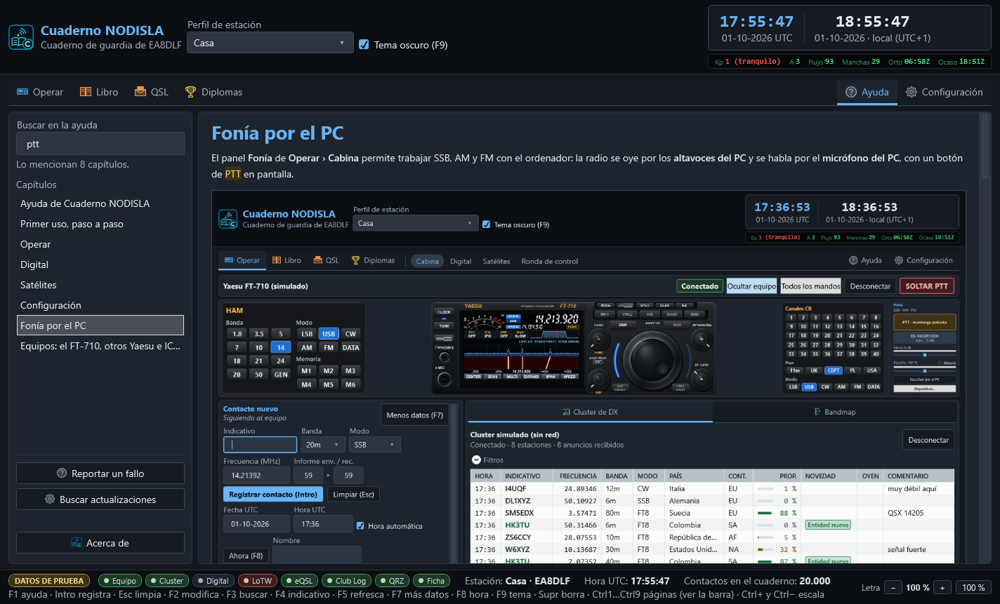
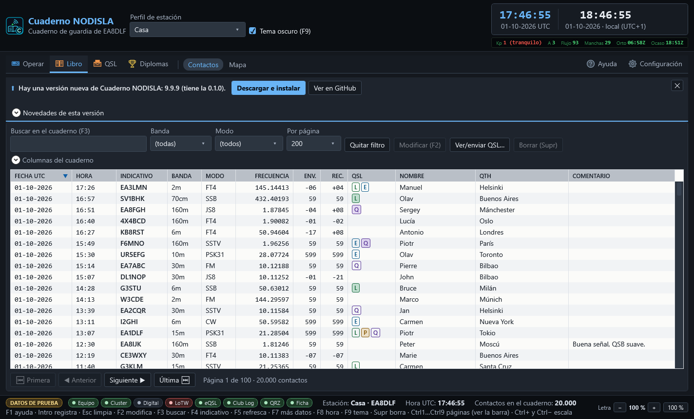
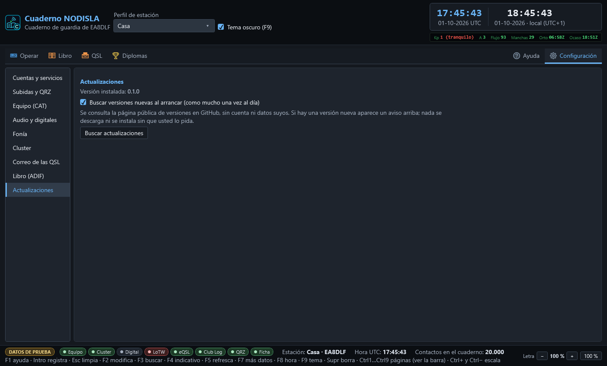
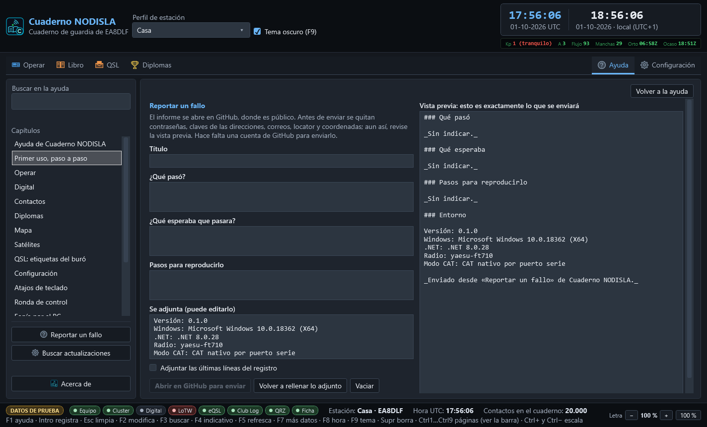
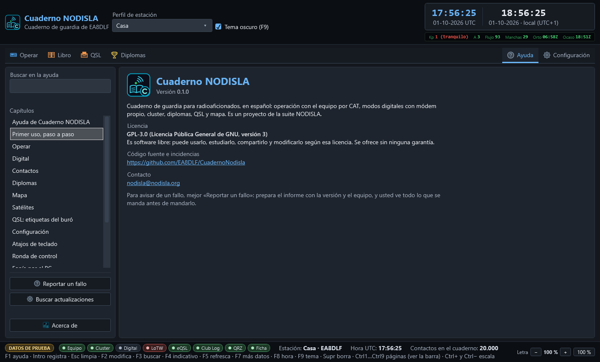

Ayuda, actualizaciones y reporte de fallos
La ayuda
La entrada Ayuda, a la derecha de la barra, abre esta misma ayuda dentro del programa: sin navegador y sin conexión. A la izquierda, el buscador y el índice de capítulos; a la derecha, el capítulo con sus capturas. Los enlaces entre capítulos se siguen con un clic.


- F1, desde cualquier página, abre la ayuda por el capítulo de esa página: desde la Cabina, el de Operar; desde Configuración, el de Configuración; desde QSL › Diplomas, el del diseñador.
- Buscar en la ayuda: escriba una o varias palabras, sin preocuparse de mayúsculas ni tildes («fonia» encuentra «fonía»). El índice se queda con los capítulos que las mencionan y, dentro del capítulo, las palabras salen resaltadas.
- La letra sigue a la de la ventana: con
Ctrl+yCtrl−crece y mengua con todo lo demás.


La ayuda que se lee dentro del programa es siempre la de su misma versión: va dentro del ejecutable.
El aviso de versión nueva
Al arrancar (en segundo plano y como mucho una vez al día) el programa mira en la página pública de versiones de GitHub si hay una más nueva. Si la hay, aparece una barra fina encima de la página, sin ventanas ni robar el foco:


- Novedades de esta versión despliega las notas.
- Descargar e instalar baja el instalador, comprueba su suma SHA-256 y, si cuadra, cierra el programa de forma ordenada y lo instala. Si la suma no cuadra o falta, borra lo descargado y no instala nada.
- Ver en GitHub abre la página de la versión.
- ✕ oculta el aviso; de esa versión no se vuelve a avisar al arrancar.
Nada se descarga ni se instala sin que usted lo pida, y la consulta no lleva cuenta ni datos suyos. Sus datos (%AppData%\CuadernoNodisla\) no se tocan al actualizar.
Buscar actualizaciones a mano
Desde Ayuda › Buscar actualizaciones o desde Configuración › Actualizaciones. Es el mismo aviso: si hay versión nueva, se enciende la barra de arriba. En Configuración se elige además si se busca al arrancar.


Reportar un fallo
Ayuda › Reportar un fallo prepara un informe para el equipo de NODISLA. Cada vez que se abre sale un formulario nuevo, con el entorno de ese momento.


- Rellene el título, qué pasó, qué esperaba y, si puede, los pasos para reproducirlo.
- Se adjunta la versión, Windows, el equipo y la vía de CAT. Se puede editar. Si quiere, marque Adjuntar las últimas líneas del registro.
- Mire la vista previa: es exactamente lo que se enviará. Antes de enviar se quitan contraseñas, claves, correos, localizadores y coordenadas, pero revíselo igualmente.
- Abrir en GitHub para enviar abre en el navegador la página de nueva incidencia del repositorio con todo relleno. Se envía con su cuenta de GitHub; el programa no lleva ninguna clave y no manda nada por su cuenta.
Si el informe es muy largo para la dirección, el cuerpo va al portapapeles y la página le dice que lo pegue.
Acerca de
Ayuda › Acerca de enseña la versión instalada, la licencia, el repositorio y el contacto.


- Licencia: GPL-3.0, software libre y sin garantía.
- Código e incidencias: github.com/EA8DLF/CuadernoNodisla
- Contacto: nodisla@nodisla.org